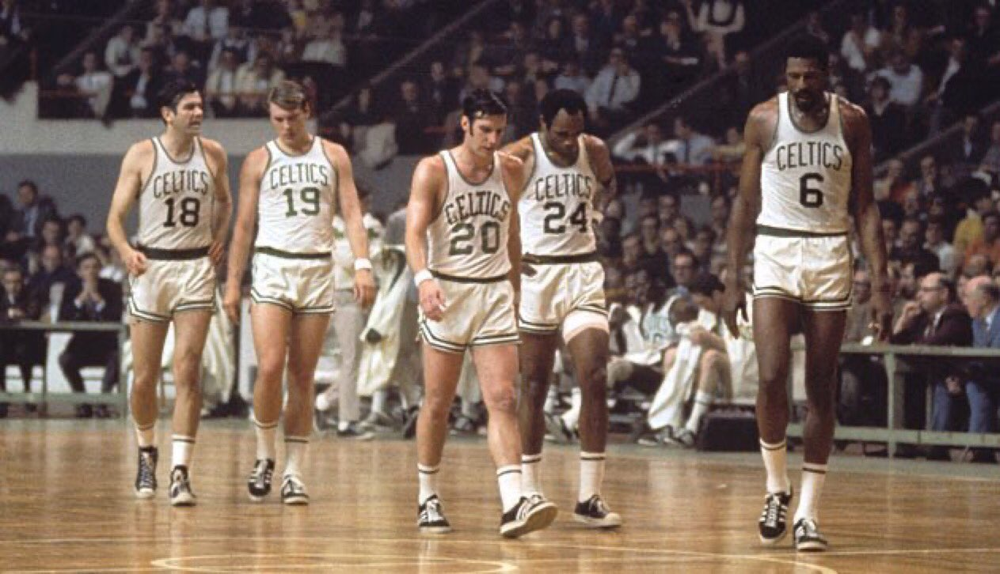
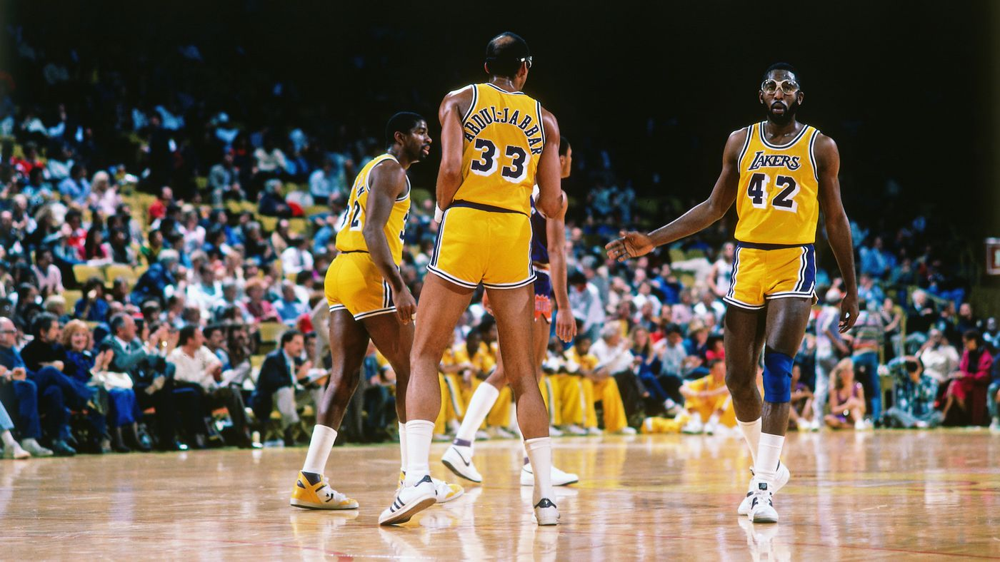

The Celtics Dynasty
When talking about the 1960's NBA, only one word comes to mind, Celtics. Boston put together and held the most impressive lineup in basketball throughout this time period, which lead to nothing but team success. From 1959 to 1966, the Boston Celtics won eight straight NBA championships, a record that no team has matched since. The following season they dropped the chip, only to reclaim their title the following two seasons. The Cels absoutely dominated the 1960s winning nine championships in ten seasons, a feat that sounds impossible today. The team consisted of hall of famers such as Bill Russell, Bob Cousy, Tom Heinsohn, and Sam Jones just to name a few. The dominance of this team is unlike anything we have ever seen in sports.
The Lakers Dynasty
Showtime. This was the nickname given to the Los Angeles Lakers of the 1980's due to their up-tempo and flashy style of play. This Lakers team possessed one of the deadliest fast breaks in the history of the sport. Between the passing abilities of Earvin "Magic" Johnson and the scoring from Kareem Abdul-Jabbar and James Worthy, this squad was a threat every time they stepped on the floor. The greatness of the Showtime Lakers could be seen in their accolades, winning a total of five championships from 1980 to 1988. Their run from 1986 to 1988 was the first time since the Celtics of the 60's that a team had claimed back to back NBA championships. It can be said without a doubt that this team changed the game forever and their impact is still felt in the league today.
